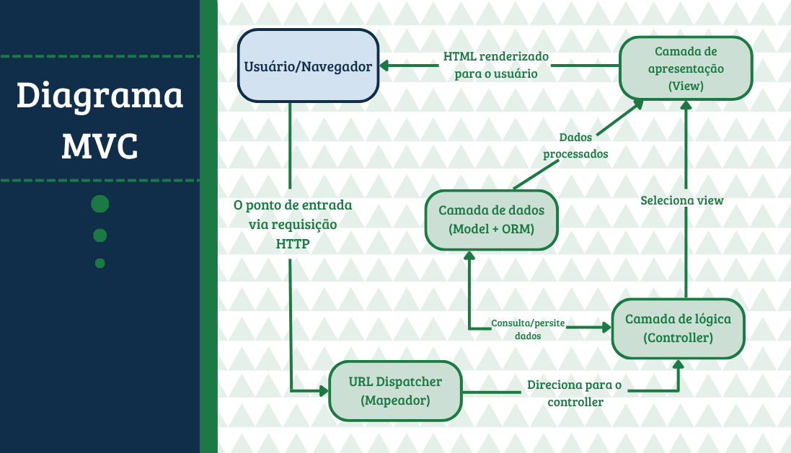
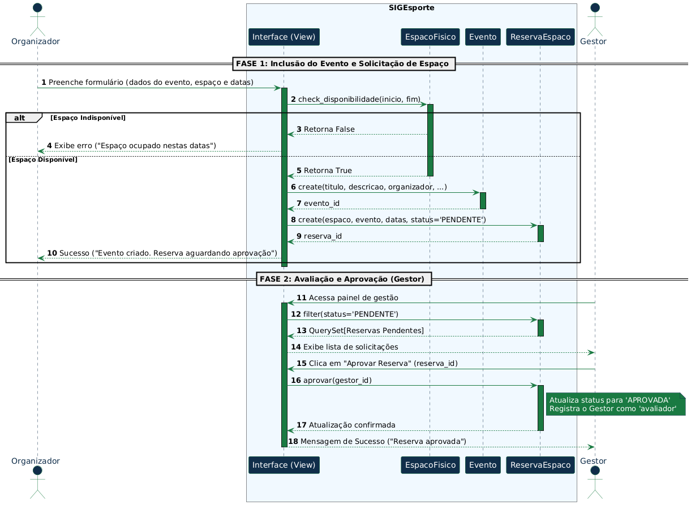
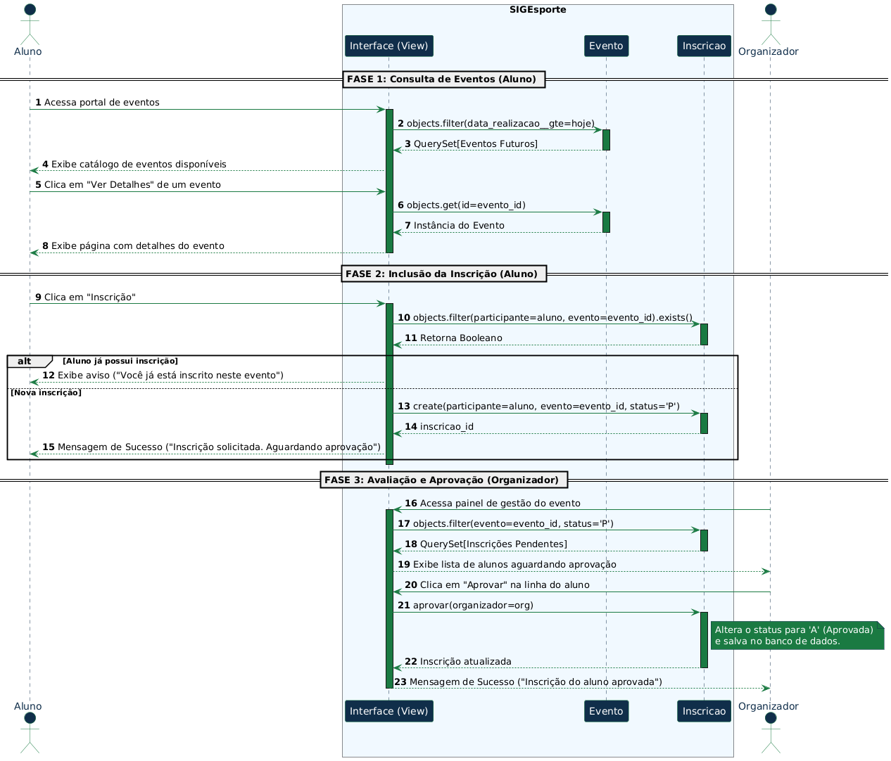
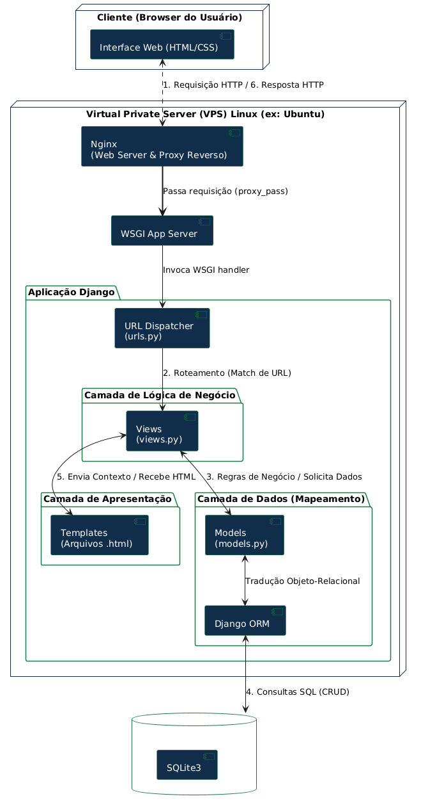
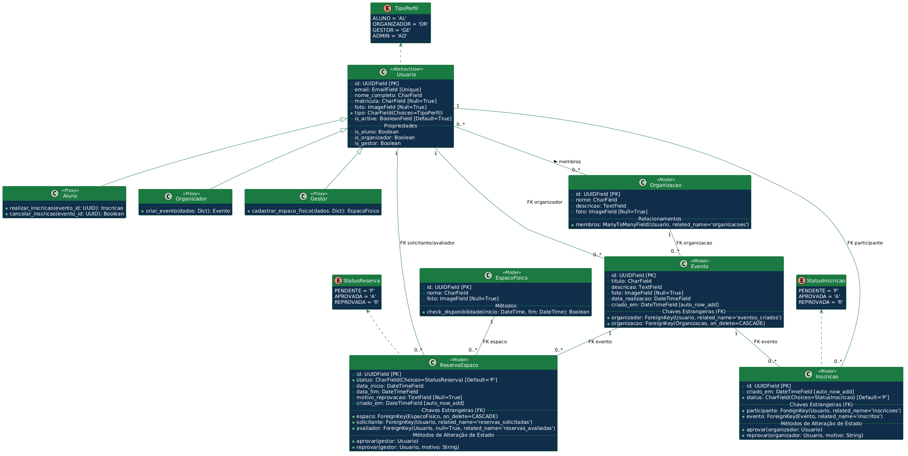
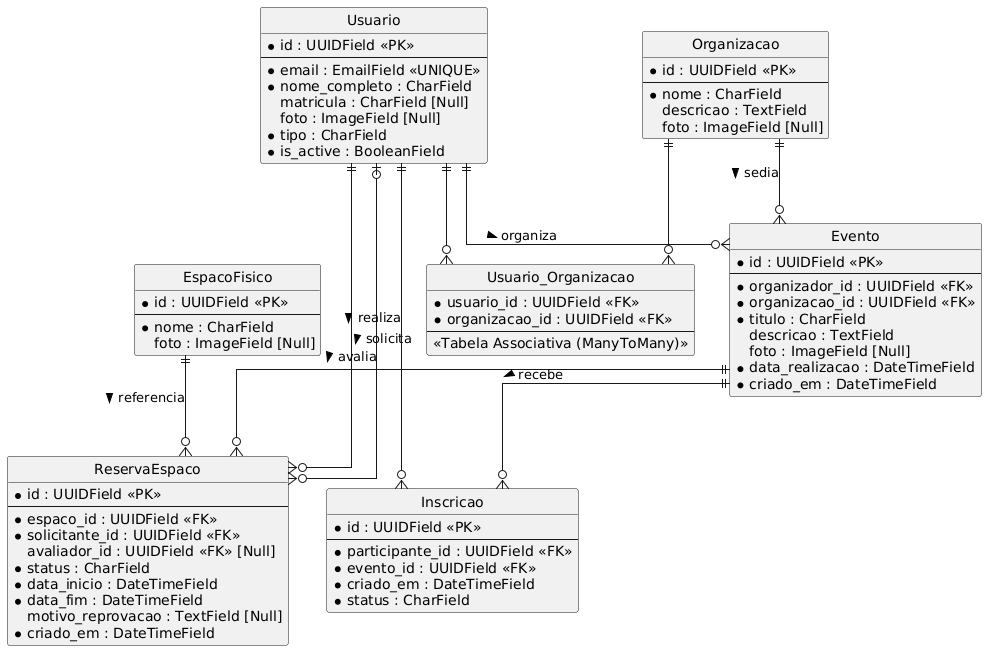
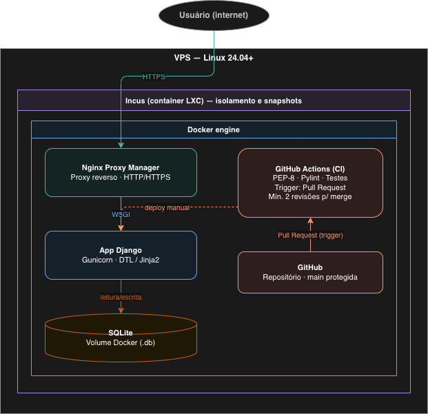

Documento de Arquitetura
Versão 1.0.3
Tabela - Integrantes do Grupo
| Matrícula | Nome | Função (responsabilidade) | Pontos de participação na elaboração |
|---|---|---|---|
| 242015666 | Marcos Vinicius Monteiro | Git Master | 11.11% |
| 241012196 | Davi Gualberto Rocha | Desenvolvedor | 11.11% |
| 251033162 | Igor B. S. Salles | Desenvolvedor | 11.11% |
| 241010880 | Ana Paula Jardim Rezende Vilela | Desenvolvedor | 11.11% |
| 241012409 | Welder Rodrigues de Medeiros | Product Owner e Scrum Master | 11.11% |
| 2110162938 | Gustavo Lima Menezes | Desenvolvedor | 11.11% |
| 222006777 | Guilherme Oliveira Monteiro | Trancado | 11.11% |
| 241012300 | Lucas Menezes Folha Brito | Desenvolvedor | 11.11% |
Histórico de Revisões
| Data | Versão | Descrição | Autor(es) |
|---|---|---|---|
| 05/05/2026 | 1.0 | Detalhamento da arquitetura do projeto. | Presentes na reunião gravada. |
| 08/05/2026 | 1.0.1 | Adicionado escopo, implementações e restrições. Adicionada bibliografia e referencias. | Igor Salles e Ana Paula Jardim |
| 09/05/2026 | 1.0.2 | Adicionado o Diagrama Entidade-Relacionamento | Welder Rodrigues de Medeiros |
| 29/05/2026 | 1.0.3 | Altera relação Evento-Reserva nos diagramas | Welder Rodrigues de Medeiros |
Sumário
2 Representação Arquitetural 4
2.4 Metas e restrições arquiteturais 8
Introdução
Propósito
Este documento descreve a arquitetura do sistema sendo desenvolvido pelo grupo, na disciplina de MDS - Métodos de Desenvolvimento de Software - edição do primeiro semestre de 2026, para o sistema SIGEsporte, a fim de fornecer uma visão abrangente do sistema para desenvolvedores, testadores e demais interessados em aspectos relacionados às tecnologias a serem usadas no desenvolvimento.
Escopo
O detalhamento completo do escopo encontra-se no documento Visão do Produto do Projeto SIGEsporte (Versão 1.2), elaborado pelo grupo Dijkstra, disponível no repositório do projeto no GitHub.
Em linhas gerais, o escopo do produto compreende o desenvolvimento de uma aplicação web para gestão de espaços físicos e organização de eventos esportivos na Faculdade de Ciências e Tecnologias em Engenharia (FCTE/UnB), substituindo a comunicação informal - predominantemente via WhatsApp - por canais oficiais e centralizados.
A plataforma atenderá quatro perfis de usuário com permissões distintas:
- Aluno: poderá visualizar o mural de eventos, consultar a disponibilidade de espaços e realizar inscrições em eventos esportivos.
- Organizador (Atléticas/CAs): poderá criar e divulgar eventos, solicitar reserva de espaços físicos e gerenciar a lista de inscritos.
- Gestor (Administração FCTE): poderá aprovar ou reprovar solicitações de reserva, cadastrar espaços físicos e acompanhar o aproveitamento das instalações.
- Administrador (Equipe Dijkstra): terá acesso total ao painel administrativo do Django para suporte técnico e gestão de permissões.
O sistema contempla os seguintes requisitos funcionais prioritários (classificação MoSCoW): autenticação e controle de acesso por perfil (MUST), reserva de espaços com verificação de conflito de horários (MUST), mural de eventos esportivos (MUST), inscrição em eventos com validação de duplicidade (MUST), aprovação de reservas pelo gestor (MUST) e gestão da lista de inscritos pelo organizador (SHOULD).
O sistema NÃO contempla: pagamento ou cobrança de inscrições; aplicativo mobile nativo (apenas web responsiva); integração com sistemas de outros campi da Universidade de Brasília; nem geração automática de documentos de autorização externos ao sistema.
Representação Arquitetural
Definições
O sistema seguirá uma arquitetura padrão MVC (Model-View-Controller), um padrão amplamente consolidado no desenvolvimento web, com clara separação de responsabilidades e amplo suporte nas principais linguagens e frameworks do mercado. Como decisão arquitetural da proposta de solução, a equipe optou por uma aplicação web monolítica em camadas, organizada segundo o padrão MVC. Isso significa que os módulos do sistema serão desenvolvidos e implantados em uma única aplicação web, mantendo separação lógica entre apresentação, regras de negócio e persistência de dados.
Justifique sua escolha
É uma arquitetura simples e adequada para projetos de até médio-porte, com velocidade de desenvolvimento maior e atribuições bem definidas entre camadas. Devido ao prazo, optou-se por uma abordagem monolítica.
O sistema precisa atender funcionalidades como gerenciamento de eventos esportivos, inscrição de participantes, reserva de espaços físicos, aprovação de solicitações e controle de diferentes perfis de acesso. Dessa forma, o Django foi escolhido por oferecer recursos nativos de autenticação, controle de permissões, gerenciamento de sessões e ORM, reduzindo a complexidade de desenvolvimento.
O padrão MVC permite separar as responsabilidades da aplicação em três partes principais: Models, responsáveis pela estrutura e persistência dos dados; Controllers, responsáveis pelo processamento das requisições e aplicação das regras de negócio; e Views, responsáveis pela apresentação das informações ao usuário.
A abordagem monolítica foi adotada devido ao prazo disponível, ao porte acadêmico do projeto e à ausência de necessidade de APIs externas ou microsserviços. Essa escolha simplifica o desenvolvimento, os testes, a implantação e a manutenção inicial da aplicação.
Detalhamento
O SIGEsporte adota o padrão arquitetural MVC (Model-View-Controller), implementado sobre o framework Django.
A figura a seguir representa esquematicamente as camadas da arquitetura, seus componentes principais e os conectores entre eles:

Instanciação dos elementos arquiteturais para o SIGEsporte
Model - Camada de dados
Responsável pela definição das entidades do domínio e pela persistência dos dados. Implementado no pacote models.py de cada aplicação Django do projeto, utilizando o Django ORM para mapeamento objeto-relacional. No SIGEsporte, os Models instanciados são:
- Usuario: entidade central do sistema, com campos de e-mail único, nome completo, foto de perfil, tipo de usuário (Aluno, Organizador, Gestor ou Administrador) e status ativo. Utiliza UUID (sk_) como chave primária.
- Organizacao: representa atléticas e centros acadêmicos vinculados ao sistema. Possui relacionamento muitos-para-muitos com Usuario, implementado pela tabela associativa Usuario_Organizacao.
- EspacoFisico: representa os espaços físicos disponíveis para eventos, como quadra, áreas de lazer etc. Armazena nome e foto opcional do espaço.
- Evento: entidade que descreve os eventos esportivos cadastrados. Vinculado obrigatoriamente a um Usuario organizador e a uma Organizacao. Contém título, descrição, foto, data de realização e data de criação.
- ReservaEspaco: controla a solicitação de uso de um espaço físico para um evento. Armazena status (pendente, aprovada, reprovada), datas e horários de início e fim, motivo de reprovação quando aplicável, e referências ao espaço, ao usuário solicitante e ao gestor avaliador.
- Inscricao: tabela associativa entre Usuario (participante) e Evento. Registra a data de criação e o status da inscrição (pendente, aprovada, reprovada).
O Django ORM abstrai o acesso direto ao banco de dados, permitindo que todas as operações sejam expressas em Python independentemente do SGBD subjacente.
Essa característica garante escalabilidade na camada de dados: caso o volume de informações ou a demanda de concorrência exijam no futuro uma migração do SQLite para um SGBD mais robusto - como PostgreSQL ou MySQL - a transição pode ser realizada com alterações mínimas de configuração, sem necessidade de reescrita das regras de negócio ou das queries da aplicação.
Controller - Camada de lógica
Responsável por receber as requisições HTTP vindas do URL Dispatcher, aplicar as regras de negócio, interagir com os Models quando necessário e selecionar a View que será renderizada como resposta.
Implementado no pacote views.py de cada aplicação Django do projeto.
Os Controllers do SIGEsporte são organizados nos seguintes pacotes funcionais:
- Pacote de autenticação: gerencia login, logout, expiração de sessão e autenticação única por sessão, utilizando o pacote django.contrib.auth.
- Pacote de eventos: controla a criação, listagem, visualização e cancelamento de eventos pelo Organizador. Verifica disponibilidade de espaço antes de registrar uma reserva.
- Pacote de reservas: processa solicitações de reserva de espaço e expõe ao Gestor o painel de aprovação e reprovação.
- Pacote de inscrições: permite que o Aluno? solicite inscrição em um evento, verificando duplicidade. Expõe ao Organizador o painel de gestão de inscritos.
- Pacote de perfil: permite que o usuário visualize e edite seu próprio perfil.
O controle de acesso por perfil é implementado via decoradores do pacote django.contrib.auth (login_required, permission_required), garantindo que apenas usuários autorizados acessem cada Controller.
View - Camada de apresentação
Responsável pela renderização da interface visual entregue ao usuário. Recebe o contexto de dados preparado pelo Controller e gera o HTML final enviado ao navegador.
Implementada no pacote templates de cada aplicação Django do projeto. O SIGEsporte suporta dois motores de template:
- DTL (Django Template Language): motor nativo do Django, utilizado por padrão.
- Jinja2: motor de alta performance utilizado como alternativa para módulos que exijam maior flexibilidade de renderização.
Os templates herdam de um template base (base.html), garantindo consistência visual e reutilização do layout em todas as páginas.
URL Dispatcher - Conector de entrada
Componente de roteamento responsável por mapear as URLs das requisições HTTP aos Controllers correspondentes. É o ponto de entrada do sistema após o recebimento da requisição pelo Gunicorn.
Implementado no pacote urls.py de cada aplicação Django, incluído no roteador principal do projeto.
Responsabilidades, interfaces e regras de uso
| Elemento | Responsabilidade | Entrada | Saída |
|---|---|---|---|
| urls.py | Rotear requisições HTTP ao Controller correto | Requisição HTTP (método + URL) | Chamada ao Controller |
| views.py | Aplicar regras de negócio e controlar o fluxo | HttpRequest do Django | HttpResponse ou redirecionamento |
| models.py | Persistir e recuperar dados do banco | Chamadas Python via ORM | Objetos Python (QuerySets) |
| templates/ | Renderizar a interface HTML com dados do contexto | Dicionário de contexto | Página HTML renderizada |
| SQLite / ORM | Armazenar dados; abstrair troca de SGBD futura | SQL gerado pelo ORM | Registros lidos/escritos no .db |
Metas e restrições arquiteturais
O sistema possui as seguintes metas e restrições arquiteturais:
| Meta ou restrição | Descrição | Justificativa |
|---|---|---|
| Sistema exclusivamente web | O sistema será acessado por navegador | Facilita o acesso sem instalação local |
| Interface responsiva | A aplicação deve se adaptar a diferentes tamanhos de tela | Permite uso em computadores, tablets e celulares |
| Ausência de APIs externas | O sistema não dependerá de serviços externos | Reduz complexidade e riscos de integração |
| Ausência de microsserviços | O sistema será desenvolvido como aplicação monolítica | Adequado ao prazo, escopo e tamanho da equipe |
| Padrão MVC | A aplicação seguirá o padrão Model-View-Controller | Padrão amplamente consolidado, clara separação de responsabilidades. |
| Padrão PEP-8 | O código Python deve seguir o padrão PEP-8 | Melhora legibilidade e padronização |
| Verificação com Pylint | O código será analisado com Pylint | Auxilia na identificação de problemas de qualidade |
| Controle de acesso | Usuários terão permissões conforme perfil | Necessário para segurança e separação de responsabilidades |
| Autenticação obrigatória | Funcionalidades restritas exigirão login | Garante acesso controlado ao sistema |
Visões
Visão uso
A visão de uso apresenta o escopo funcional do SIGEsporte a partir da interação entre os usuários e o sistema. O sistema permite que usuários autenticados acessem funcionalidades conforme seu perfil de acesso, como criação de eventos, solicitação de reserva de espaços físicos, inscrição em eventos e aprovação de solicitações.
Os principais perfis de usuário são: Aluno, Organizador, Gestor e Administrador. Cada perfil possui permissões específicas, garantindo que apenas usuários autorizados possam executar determinadas ações.
Visão de uso da criação de evento

A funcionalidade de criação de evento é realizada pelo perfil Organizador. O organizador preenche os dados do evento, informa o espaço físico desejado e define as datas de realização. Antes da criação da reserva, o sistema verifica a disponibilidade do espaço físico para o período informado.
Caso o espaço esteja indisponível, o sistema exibe uma mensagem de erro informando que o local já está ocupado nas datas solicitadas. Caso esteja disponível, o sistema cria o evento e registra uma solicitação de reserva de espaço com status pendente.
Após a solicitação, o perfil Gestor acessa o painel de gestão, visualiza as reservas pendentes e pode aprovar a reserva. Quando aprovada, o sistema atualiza o status da solicitação para aprovada e registra o gestor responsável pela avaliação.
Esse fluxo evidencia a separação de responsabilidades entre os perfis do sistema: o organizador solicita a criação do evento e a reserva do espaço, enquanto o gestor valida e aprova o uso do espaço físico.
Visão de uso da inscrição nos eventos evento

A funcionalidade de inscrição em eventos é realizada pelo perfil Aluno. O aluno acessa o portal de eventos, visualiza a lista de eventos disponíveis e consulta os detalhes de um evento específico.
Ao solicitar inscrição, o sistema verifica se o aluno já possui uma inscrição registrada para o mesmo evento. Caso já exista uma inscrição, o sistema exibe uma mensagem informando que o aluno já está inscrito. Caso contrário, uma nova inscrição é criada com status pendente.
Posteriormente, o Organizador do evento acessa o painel de gestão, visualiza as inscrições pendentes e decide pela aprovação ou reprovação da participação. Quando aprovada, o sistema atualiza o status da inscrição para aprovada.
Esse fluxo demonstra o controle de participação nos eventos e garante que a inscrição do aluno seja validada pelo responsável do evento.
Visão de organização lógica
A visão de organização lógica apresenta a estrutura arquitetural do SIGEsporte, evidenciando a divisão do sistema em camadas e módulos responsáveis pelo processamento das requisições, aplicação das regras de negócio, manipulação dos dados e apresentação das informações ao usuário.

A arquitetura adotada segue o padrão MVC (Model-View-Controller), promovendo separação de responsabilidades, reutilização de código, facilidade de manutenção e organização lógica da aplicação.
O sistema é subdividido nos seguintes módulos:
| Módulo | Responsabilidade |
|---|---|
| Interface Web | Responsável pela interação com o usuário através de páginas HTML/CSS acessadas via navegador. |
| URL Dispatcher (urls.py) | Realiza o roteamento das requisições HTTP para as views correspondentes. |
| Views (views.py) | Implementam as regras de negócio do sistema e controlam o fluxo das operações. |
| Templates (.html) | Responsáveis pela renderização da interface e apresentação dos dados ao usuário. |
| Models (models.py) | Representam as entidades do sistema e definem a estrutura dos dados persistidos. |
| Django ORM | Realiza o mapeamento objeto-relacional e abstrai o acesso ao banco de dados. |
| SQLite | Responsável pela persistência das informações do sistema. |
Organização das camadas
A arquitetura lógica do sistema é organizada nas seguintes camadas:
Camada de apresentação
Responsável pela interface visual da aplicação e pela comunicação direta com o usuário. Essa camada utiliza templates HTML/CSS para exibir informações e receber dados inseridos pelos usuários.
Camada de lógica de negócio
Implementada pelas views do Django, concentra as regras de negócio da aplicação, como criação de eventos, validação de inscrições, aprovação de reservas e controle de permissões de acesso.
Camada de dados
Responsável pela modelagem e persistência dos dados do sistema. Os models representam as entidades do domínio e utilizam o Django ORM para comunicação com o banco de dados SQLite.
Comunicação entre os módulos
A comunicação entre os módulos ocorre da seguinte forma:
- O usuário acessa o sistema por meio do navegador web.
- Uma requisição HTTP é enviada ao servidor da aplicação.
- O módulo urls.py identifica a rota correspondente à funcionalidade solicitada.
- A view responsável processa a requisição e aplica as regras de negócio.
- Caso necessário, os models acessam o banco de dados através do Django ORM.
- Os dados processados são enviados aos templates HTML.
- O servidor retorna a resposta HTTP renderizada ao usuário.
A adoção da arquitetura em camadas contribui para a modularização do sistema, reduzindo acoplamento entre componentes e facilitando manutenção, escalabilidade e evolução futura da aplicação.
Visão estrutural
A visão estrutural apresenta a composição interna do SIGEsporte, identificando os principais elementos do sistema, suas responsabilidades e os relacionamentos existentes entre eles. Essa visão permite compreender como as classes, entidades e componentes se organizam para atender às funcionalidades do sistema.
O sistema é estruturado em torno das entidades principais Usuário, Organização, Espaço Físico, Evento, Reserva de Espaço e Inscrição. Essas entidades representam os dados centrais da aplicação e se relacionam para permitir o gerenciamento de eventos esportivos, reservas de espaços e inscrições de participantes.
Diagrama de classes

O diagrama de classes representa os principais elementos do domínio do sistema e seus relacionamentos.
| Classe | Responsabilidade |
|---|---|
| Usuario | Representa os usuários do sistema e armazena dados de autenticação, identificação e perfil de acesso. |
| Aluno | Especialização lógica do usuário com permissão para consultar eventos e solicitar inscrições. |
| Organizador | Especialização lógica do usuário responsável por criar eventos e gerenciar inscrições. |
| Gestor | Especialização lógica do usuário responsável por cadastrar espaços físicos e aprovar ou reprovar reservas. |
| Organizacao | Representa uma organização vinculada a usuários e eventos. |
| EspacoFisico | Representa os espaços físicos disponíveis para realização dos eventos. |
| Evento | Representa os eventos cadastrados no sistema, contendo dados como título, descrição, data e organização responsável. |
| ReservaEspaco | Controla a solicitação de uso de um espaço físico para um evento, incluindo status, datas e avaliação do gestor. |
| Inscricao | Representa a inscrição de um participante em um evento, controlando status de aprovação ou reprovação. |
Relacionamentos entre as classes
A classe Usuário é a base para os diferentes perfis de acesso do sistema. Os perfis Aluno, Organizador e Gestor representam papéis distintos e determinam as permissões de cada usuário.
A classe Organização possui relacionamento com Usuario, permitindo que usuários estejam vinculados a uma ou mais organizações. A classe Evento também se relaciona com Organização, pois cada evento pertence a uma organização responsável.
A classe Evento está associada a Inscricao, pois um evento pode possuir várias inscrições de participantes. Cada inscrição pertence a um único usuário participante e a um único evento.
A classe ReservaEspaco relaciona-se com EspacoFisico, Evento e Usuario. Ela registra qual espaço está sendo solicitado, qual evento está associado à reserva, quem solicitou a reserva e, quando avaliada, qual gestor realizou a aprovação ou reprovação.
Diagrama de Entidade-Relacionamento
O ERD (Diagrama Entidade-Relacionamento) é uma ferramenta visual usada para modelar a estrutura lógica de um banco de dados relacional.
Ele representa as entidades (como objetos ou conceitos), seus atributos (características) e os relacionamentos entre elas através de símbolos gráficos.
Seu objetivo principal é facilitar a compreensão da organização dos dados e garantir que o design do banco atenda aos requisitos do sistema.
A seguir, apresentamos o diagrama ERD do SIGEsporte:

O esquema de banco de dados é composto por sete entidades principais destinadas a gerenciar usuários, organizações, espaços físicos, reservas e eventos. A entidade central é Usuario, que armazena informações individuais como e-mail único, nome completo, matrícula opcional, foto, tipo de usuário e status ativo, utilizando um UUID como chave primária. Para gerenciar a relação entre usuários e organizações, existe a entidade Organizacao, que contém nome, descrição e foto. O relacionamento entre estas duas entidades são de muitos-para-muitos, implementado através da tabela associativa Usuario_Organizacao, que vincula chaves estrangeiras de ambos os lados.
Os locais físicos são representados pela entidade EspacoFisico, que registra o nome e uma foto opcional do espaço. O uso desses espaços é controlado pela entidade ReservaEspaco, que gerencia as solicitações vinculando um espaço físico a um usuário solicitante. Uma reserva também pode ter, opcionalmente, um usuário avaliador associado. Esta entidade rastreia o status da reserva, as datas e horários de início e fim, o motivo de uma eventual reprovação e a data de criação. Os relacionamentos indicam que um EspacoFisico pode ter múltiplas reservas, e um Usuario pode solicitar ou avaliar múltiplas reservas.
A entidade Evento descreve as atividades planejadas no sistema. Cada evento é obrigatoriamente vinculado a um usuário organizador e a uma organização sediadora. Seus atributos incluem título, descrição, foto, data de realização e data de criação. Existe um relacionamento um-para-um opcional entre Evento e ReservaEspaco; uma reserva pode existir sem um evento, mas um evento pode, opcionalmente, estar vinculado a no máximo uma reserva específica através de uma chave estrangeira única. Por fim, a participação dos usuários nos eventos é gerenciada pela entidade Inscricao, que atua como uma tabela associativa entre Usuario (como participante) e Evento, registrando a data de criação e o status da inscrição. Um usuário pode realizar múltiplas inscrições e um evento pode receber múltiplas inscrições.
Visão de Implantação
O SIGEsporte será implantado em um servidor VPS (Virtual Private Server) com sistema operacional Linux (Ubuntu 24.04 LTS ou superior), independente de provedor, uma vez que a stack adotada é compatível com qualquer ambiente que atenda esse requisito de sistema operacional.
Infraestrutura e camadas
A implantação é organizada em três camadas de isolamento:
Camada 1 - VPS: servidor virtual com Linux 24.04+, responsável pelo ambiente base de execução. A escolha por um VPS genérico garante portabilidade entre provedores (Hetzner, DigitalOcean, Linode, servidores institucionais, entre outros).
Camada 2 - Incus (container LXC): executa sobre o VPS e provê isolamento do ambiente em relação ao sistema operacional do host, além de permitir snapshots do estado da aplicação e rollback em caso de falha de implantação. O Docker é executado dentro deste container.
Camada 3 - Docker: orquestra os serviços da aplicação em dois containers:
- Container Nginx Proxy Manager (NPM): recebe as requisições externas via HTTP/HTTPS e atua como proxy reverso, repassando-as ao container da aplicação. Centraliza o controle de domínio, certificados TLS e roteamento.
- Container App Django: executa a aplicação web servida pelo Gunicorn (servidor WSGI). Suporta dois motores de template conforme a necessidade de cada módulo: DTL (Django Template Language) e Jinja2.
Banco de dados
O banco de dados utilizado é o SQLite. A persistência é garantida por um arquivo .db passado como volume ao container Docker da aplicação, mantendo os dados fora do ciclo de vida do container.
Controle de versão e pipeline de qualidade
O código-fonte é hospedado no GitHub. A branch main é protegida - nenhum push direto é permitido. Toda alteração exige Pull Request com no mínimo duas revisões aprovadas antes do merge.
O pipeline de CI é executado via GitHub Actions a cada Pull Request, realizando:
- Verificação de conformidade com PEP-8;
- Análise estática com Pylint;
- Execução da suíte de testes automatizados.
O deploy no VPS é realizado manualmente. A adoção de deploy contínuo (CD) via GitHub Actions é prevista para fases futuras do projeto.
Inexoravelmente, o projeto deve migrar para um deploy contínuo usando ferramentas apropriadas, no entanto, é evidente que se pode rodar infinitas versões da mesma aplacação sem nunca correr o risco de levar a erros grosseiros e quebra de funcionalidade imediata uma vez que com Incus e docker em uma stack se torna extremamente robusto quanto a single point of failure.
Note que, apesar da ferramenta ter sido desenvolvida para desenvolvimento ágil e assíncrono, ela se deturpou de suas origens e hoje é usada comercialmente por grandes empresas para implementação easy ready. Com um único arquivo de compose ou mesmo uma linha de comando, entrega-se o produto ao cliente sem ele ter conhecimentos avançados sobre a tecnologia, requisitos de sistema e ainda configurações avançadas.
Ato contínuo, o comprometimento para o implementador, hoje, diminuiu muito haja visto que houve um trade-off entre a velocidade de implementação e o desempenho e over-head do sistema.
Tentar-se-á um modelo dinâmico com o uso dessas ferramentas, mas ainda, buscando sempre, o melhor desempenho e qualidade de serviço ao cliente.

De forma apresentado pela figura X a implementação terá 3 níveis de segurança básica por default, triple NAT e resolução de endereçamentos não trivial.
A segurança de infraestrutura deixa os desenvolvedores com menor carga de garantir segurança para a aplicação já que grande parte da estrutura deixa bem transparente para eles o uso de boas práticas sem se preocupar com security layers (camadas extras de segurança).
Restrições adicionais
Acesso e autenticação
O sistema é acessível pela internet aberta via navegador web, sem necessidade de instalação local.
O acesso a qualquer funcionalidade restrita exige autenticação prévia. A autenticação é implementada com as ferramentas nativas do Django (django.contrib.auth), que proveem login, logout, controle de sessão e proteção contra-ataques comuns como CSRF (Cross-Site Request Forgery) e XSS (Cross-Site Scripting).
As sessões de usuário expiram após período de inatividade, configurado via SESSION_COOKIE_AGE do Django.
A política de senhas exige senhas fortes, validadas pelos validadores nativos do Django (AUTH_PASSWORD_VALIDATORS e outros), incluindo comprimento mínimo, restrição de senhas comuns e verificação de similaridade com dados pessoais do usuário.
O sistema adota o princípio de autenticação única por sessão (one login), impedindo que o mesmo usuário mantenha múltiplas sessões ativas simultaneamente.
Perfis de acesso e permissões
- Aluno: acesso de leitura ao calendário de eventos e mural de espaços; acesso de escrita para realizar inscrições em eventos e editar o próprio perfil.
- Organizador (Atlética/CA): herda as permissões do Aluno; acesso adicional de escrita para criar eventos, solicitar reserva de espaço, gerenciar lista de inscritos e cancelar os próprios eventos.
- Gestor (Administração FCTE): acesso de leitura completo ao sistema e aos relatórios; acesso de escrita para aprovar ou reprovar reservas de espaço, cadastrar novos espaços físicos e bloquear horários para manutenção.
- Administrador (Equipe Dijkstra): acesso total ao painel administrativo do Django (/admin) para suporte técnico, correção de dados e gestão de permissões de alto nível.
Concorrência
O sistema é projetado para suportar até 50 usuários simultâneos, estimativa condizente com o porte acadêmico do projeto e com o público-alvo restrito à comunidade da FCTE/UnB. O servidor Gunicorn será configurado com número de workers adequado a essa carga.
Disponibilidade
A meta de disponibilidade do sistema é de 80% a 90% do tempo, compatível com o contexto acadêmico e com a infraestrutura de VPS sem redundância. Esse índice corresponde a uma indisponibilidade aceitável de até 72 horas mensais no limite inferior da meta.
É importante notar que, independentemente da métrica estipulada, o valor definido não é um número aleatório explicitado pela equipe, mas resultados de demandas de manutenção e análise de controle.
O servidor dimensionado, por nosso demo test, agora está pronto para ser supervisionado e mantido com um único técnico adicionando ferramentas de controle simples, como disparo de logs, Overflow e com o uso do Terraform seria trivial a condução de uma disponibilidade de +90%.
Entrementes, este não é o escopo deste projeto e a decisão dessas ações devem ser postergadas para uma reanálise futura.
Portabilidade e compatibilidade
O sistema é exclusivamente web responsivo, sem versão mobile nativa.
A interface deve funcionar corretamente nos principais navegadores modernos - Google Chrome, Mozilla Firefox e Microsoft Edge - dentro das versões suportadas por seus respectivos fabricantes, excluindo versões com falhas de segurança conhecidas e não corrigidas. Navegadores que não recebem mais atualizações de segurança (como Internet Explorer) estão fora do escopo de suporte.
Veja que, isto por si só bate de confronto a um dos requisitos do usuário de ser responsivo aos dispositivos mobile, portanto, a entrega vai ser funcional em qualquer dispositivo independente do sistema operacional, podendo ser acessado por "todas as telas".
Este ponto foi levantado pontualmente, uma vez que, para dispositivos derivados do iOS o webkit é o mesmo do safari independentemente do navegador que o usuário escolher abrir por definição e prática. Quanto aos dispositivos Android uma coletânea mínima vai ser fixada e a princípio somente o web-kit do Chrome e da Samsung serão atendidos.
Qualidade de código
O código Python do projeto deve estar em conformidade com o padrão PEP-8 e ser aprovado na análise estática do Pylint. Essas verificações são executadas automaticamente a cada Pull Request via GitHub Actions, conforme descrito na Visão de Implantação, e são os mínimos requisitos.
Será exigido ainda, mesmo que de forma primária, implementação de cobertura de testes unitários para que passe pelo processo de chegar ao pull request.
Tais implementações rígidas se devem pela necessidade de evitar ao máximo o retrabalho, facilitar a revisão de pares de desenvolvimento, qualidade de software elevado e produto entregue funcionando de forma adequada a cada rebuild no servidor do docker deploy.
Bibliografia
DJANGO SOFTWARE FOUNDATION. Django documentation. Versão estável. Disponível em: https://docs.djangoproject.com/en/stable/. Acesso em: 08 mai. 2026.
GITHUB INC. GitHub Actions documentation. Disponível em: https://docs.github.com/en/actions. Acesso em: 08 mai. 2026.
GUNICORN CONTRIBUTORS. Gunicorn - Python WSGI HTTP server for UNIX. Disponível em: https://docs.gunicorn.org/en/latest/. Acesso em: 08 mai. 2026.
IEEE; ISO; IEC. ISO/IEC/IEEE 42010:2011 - Systems and software engineering: architecture description. Nova Iorque: IEEE, 2011. Disponível em: https://ieeexplore.ieee.org/document/6129467/. Acesso em: 08 mai. 2026.
LINUX CONTAINERS PROJECT. Incus documentation. Disponível em: https://linuxcontainers.org/incus/docs/main/. Acesso em: 08 mai. 2026.
NGINXPROXYMANAGER CONTRIBUTORS. Nginx Proxy Manager - guide. Disponível em: https://nginxproxymanager.com/guide/. Acesso em: 08 mai. 2026.
PRESSMAN, Roger S.; MAXIM, Bruce R. Engenharia de software: uma abordagem profissional. 8. ed. Porto Alegre: AMGH, 2016.
PYLINT CONTRIBUTORS. Pylint documentation. Disponível em: https://pylint.readthedocs.io/en/stable/. Acesso em: 08 mai. 2026.
PYTHON SOFTWARE FOUNDATION. PEP 8 - style guide for Python code. Autores: Guido van Rossum, Barry Warsaw, Alyssa Coghlan. 2001. Disponível em: https://peps.python.org/pep-0008/. Acesso em: 08 mai. 2026.
SCHWABER, Ken; SUTHERLAND, Jeff. O guia do Scrum: o guia definitivo para o Scrum, as regras do jogo. Scrum.org, 2020. Disponível em: https://scrumguides.org. Acesso em: 08 mai. 2026.
BECK, Kent et al. Manifesto para desenvolvimento ágil de software. AgileManifesto.org, 2001. Disponível em: https://agilemanifesto.org/iso/ptbr/manifesto.html. Acesso em: 08 mai. 2026.
SOMMERVILLE, Ian. Engenharia de software. 10. ed. São Paulo: Pearson, 2019.
SQLITE CONSORTIUM. SQLite documentation. Disponível em: https://www.sqlite.org/docs.html. Acesso em: 08 mai. 2026.
BASILI, Victor R.; CALDIERA, Gianluigi; ROMBACH, H. Dieter. Goal question metric approach. In: MARCINIAK, John J. (ed.). Encyclopedia of software engineering. Nova Iorque: Wiley, 1994. p. 528-532.
UNIVERSIDADE DE BRASÍLIA. Coordenação de Esporte e Lazer - CEL. Disponível em: https://www.cel.unb.br. Acesso em: 08 mai. 2026.